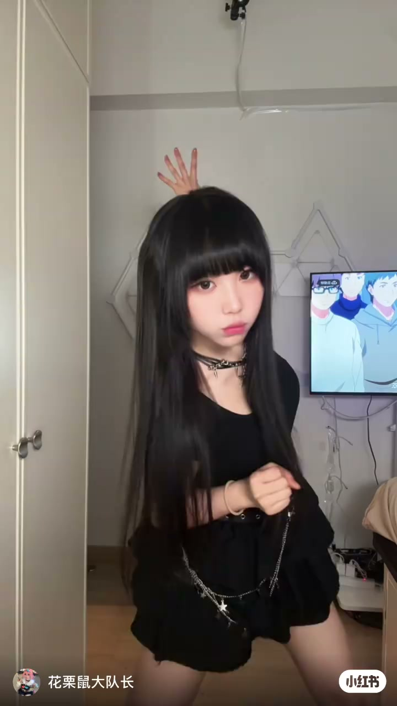
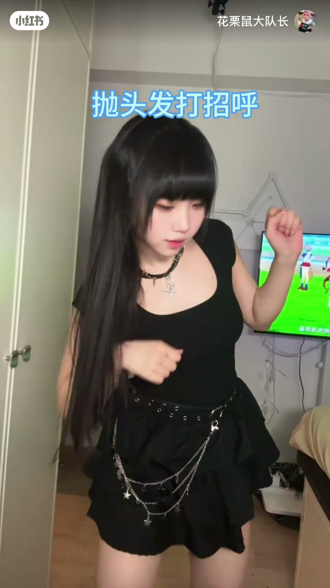

内容要点
一支 23 秒的舞蹈动作快教学，博主把 8 个简单动作串成一支完整小片段，每个动作都附口头口令，方便跟着练。
知识结构
[00:00→00:06]
起式与上臂动作
先做起式，另一只手放上放下都可以，配合抛头发动作打开画面。
[00:06→00:10]
空间动作：扶墙与甩手抬腿转
一只手扶墙作为支点，甩手同时抬腿转身，注意摆臂与抬腿的配合。
[00:10→00:16]
转身衔接：侧身抬腿转
侧身抬腿转衔接上一动作，再以抛头发打招呼收尾。
[00:16→00:23]
练习与互动
博主提醒收藏后跟着学，并求关注。
总结
把抛头发、扶墙、甩手抬腿转、侧身抬腿转等小动作按顺序衔接，就能组成一套易学的舞蹈片段。
起式：手位与抛头发
博主先演示起式动作：另一只手放在上面或下面都可以，随后配合抛头发的动作打开镜头画面，动作干脆利落。

空间动作：扶墙、甩手抬腿转
第二组动作先一只手扶墙作为支撑，接着甩手并抬腿转身，博主强调注意摆臂与抬腿的节奏配合。
转身衔接与收尾
第三组动作以侧身抬腿转衔接，动作连贯后接一个抛头发打招呼的收尾动作，整套动作节奏轻快。

练习提示与互动
短片结束前博主提示把视频收藏起来跟着学一学，并请观众点赞关注。